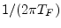
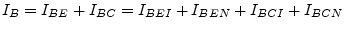

The following table contains the model parameters for the BJT (Spice Gummel-Poon) model.
| Name | Symbol | Description | Unit | Default |
| Is | saturation current | |||
| Nf | forward emission coefficient | |||
| Nr | reverse emission coefficient | |||
| Ikf | high current corner for forward beta | |||
| Ikr | high current corner for reverse beta | |||
| Vaf | forward early voltage | |||
| Var | reverse early voltage | |||
| Ise | base-emitter leakage saturation current | 0 | ||
| Ne | base-emitter leakage emission coefficient | |||
| Isc | base-collector leakage saturation current | 0 | ||
| Nc | base-collector leakage emission coefficient | |||
| Bf | forward beta | |||
| Br | reverse beta | |||
| Rbm | minimum base resistance for high currents | |||
| Irb | current for base resistance midpoint | |||
| Rc | collector ohmic resistance | |||
| Re | emitter ohmic resistance | |||
| Rb | zero-bias base resistance (may be high-current | |||
| dependent) | ||||
| Cje | base-emitter zero-bias depletion capacitance | |||
| Vje | base-emitter junction built-in potential | |||
| Mje | base-emitter junction exponential factor | |||
| Cjc | base-collector zero-bias depletion capacitance | |||
| Vjc | base-collector junction built-in potential | |||
| Mjc | base-collector junction exponential factor | |||
| Xcjc | fraction of Cjc that goes to internal base pin | |||
| Cjs | zero-bias collector-substrate capacitance | |||
| Vjs | substrate junction built-in potential | |||
| Mjs | substrate junction exponential factor | |||
| Fc | forward-bias depletion capacitance coefficient | |||
| Tf | ideal forward transit time | |||
| Xtf | coefficient of bias-dependence for Tf | |||
| Vtf | voltage dependence of Tf on base-collector voltage | |||
| Itf | high-current effect on Tf | |||
| Ptf | excess phase at the frequency  | |||
| Tr | ideal reverse transit time | |||
| Kf | flicker noise coefficient | |||
| Af | flicker noise exponent | |||
| Ffe | flicker noise frequency exponent | |||
| Kb | burst noise coefficient | |||
| Ab | burst noise exponent | |||
| Fb | burst noise corner frequency | |||
| Temp | device temperature | |||
| Xti | saturation current exponent | |||
| Xtb | temperature exponent for forward- and reverse-beta | |||
| Eg | energy bandgap | eV | ||
| Tnom | temperature at which parameters were extracted | |||
| Area | default area for bipolar transistor |
The SGP (SPICE Gummel-Poon) model is
basically a transport model, i.e. the voltage dependent ideal transfer
currents (forward  and backward ) are reference currents in
the model. The ideal base current parts are defined dependent on the
ideal transfer currents. The ideal forward transfer current starts
flowing when applying a positive control voltage at the base-emitter
junction. It is defined by:
and backward ) are reference currents in
the model. The ideal base current parts are defined dependent on the
ideal transfer currents. The ideal forward transfer current starts
flowing when applying a positive control voltage at the base-emitter
junction. It is defined by:
| (10.84) |
The ideal base current components are defined by the ideal transfer currents. The non-ideal components are independently defined by dedicated saturation currents and emission coefficients.
| (10.85) | ||||
| (10.86) |
| (10.87) | ||
| (10.88) |
The ideal backward transfer current arises when applying a positive control voltage at the base-collector junction (e.g. in the active inverse mode). It is defined by:
| (10.89) |
Again, the ideal base current component through the base-collector junction is defined in reference to the ideal backward transfer current and the non-ideal component is defined by a dedicated saturation current and emission coefficient.
| (10.90) | ||||
| (10.91) |
| (10.92) | ||
| (10.93) |
With these definitions it is possible to calculate the overall base current flowing into the device using all the base current components.
|  | (10.94) |
The overall transfer current can be calculated using the normalized base charge and the ideal forward and backward transfer currents.
| (10.95) |
The normalized base charge has no dimension and has the value for . It is used to model two effects: the influence of the base width modulation on the transfer current (Early effect) and the ideal transfer currents deviation at high currents, i.e. the decreasing current gain at high currents.
| (10.96) |
The  term is used to describe the Early effect and
term is used to describe the Early effect and  is
responsible for the high current effects.
is
responsible for the high current effects.
| and | (10.97) |
The transfer current depends on and by the normalized base charge and the forward transfer current and the backward transfer current . That is why both of the partial derivatives are required.
The forward transconductance  of the transfer current
of the transfer current  is obtained by differentiating it with respect to . The
reverse transconductance can be calculated by differentiating
the transfer current with respect to .
is obtained by differentiating it with respect to . The
reverse transconductance can be calculated by differentiating
the transfer current with respect to .
With  being the forward conductance of the ideal forward
transfer current and being the reverse conductance of the
ideal backward transfer current.
being the forward conductance of the ideal forward
transfer current and being the reverse conductance of the
ideal backward transfer current.
| (10.100) | ||
| (10.101) |
The remaining derivatives in eq. (10.98), (10.99), (10.119) and (10.120) can be written as
| (10.102) | ||
| (10.103) |
For the calculation of the bias dependent base resistance
there are two different ways within the SGP model. If the model
parameter  is not given it is determined by the normalized
base charge . Otherwise
is not given it is determined by the normalized
base charge . Otherwise  specifies the base current at
which the base resistance drops half way to the minimum (i.e. the
constant component) base resistance .
specifies the base current at
which the base resistance drops half way to the minimum (i.e. the
constant component) base resistance .
| (10.104) |
| with | (10.105) |
With the accompanied DC model shown in fig. 10.11 the MNA matrix entries as well as the current vector entries differ.
| (10.106) |
| (10.107) | ||
| (10.108) | ||
| (10.109) |
In order to implement the influence of the excess phase parameter - denoting the phase shift of the current gain at the transit frequency - the method developed by P.B. Weil and L.P. McNamee [14] can be used. They propose to use a second-order Bessel polynomial to modify the forward transfer current:
Applying the inverse Laplace transformation to eq. (10.110) and using finite difference methods the transfer current can be written as
| (10.111) |
| (10.115) |
| (10.116) |
With non-equidistant inegration time steps during transient analysis present eqs. (10.113) and (10.114) yield
| (10.117) | ||
| (10.118) |
The original SGP model implementation defines the output conductance
 and the transconductance value
and the transconductance value  . Thus the SPICE simulator
is able to compute the BJT circuit using a single voltage controlled
current source. These definitions are given here.
. Thus the SPICE simulator
is able to compute the BJT circuit using a single voltage controlled
current source. These definitions are given here.
There are two possible ways to compute the MNA matrix of the SGP model. One using a single voltage controlled current source with an accompanied output conductance and the other using two independent voltage controlled current sources (see fig.10.11). Both possibilities are equivalent.
With the accompanied DC model shown in fig. 10.12 it is possible to build the complete MNA matrix of the intrinsic BJT and the current vector.
| (10.121) |
| (10.122) | ||
| (10.123) | ||
| (10.124) |
Equations for the real valued conductances in both equivalent circuits for the intrinsic BJT have already been given.
The junctions depletion capacitances in the SGP model write as follows:
 |
(10.125) | |
| (10.126) | ||
 |
(10.127) |
The base-collector depletion capacitance is split into two components: an external and an internal.
| (10.128) | ||
| (10.129) |
The base-emitter diffusion capacitance can be obtained using the following equation.
Thus the diffusion capacitance depends on the bias-dependent effective forward transit time which is defined as:
| (10.131) |
With
| (10.132) |
the base-emitter diffusion capacitance can finally be written as:
| (10.133) |
Because the base-emitter charge in eq. (10.130) also depends on the voltage across the base-collector junction, it is necessary to find the appropriate derivative as well:
| (10.134) |
which turns out to be a so called transcapacitance. It additionally requires:
| (10.135) |
The base-collector diffusion capacitance writes as follows:
| (10.136) |
To take the excess phase parameter into account the forward transconductance is going to be a complex quantity.
| (10.137) |
With these calculations made it is now possible to define the small signal Y-parameters of the intrinsic BJT. The Y-parameter matrix can be converted to S-parameters.
| (10.138) |
with
| (10.139) | ||
| (10.140) | ||
| (10.141) | ||
| (10.142) |
The external capacitance connected between the internal collector node and the external base node is separately modeled if it is non-zero and if there is a non-zero base resistance.
The original SPICE variant of the above small signal equivalent
circuit with the transconductance  and the output conductance
and the output conductance
 is depicted in fig. 10.14.
is depicted in fig. 10.14.
The appropriate MNA matrix (Y-parameters) during the small signal analysis can be written as
| (10.143) |
The ohmic resistances , and generate thermal noise characterized by the following spectral densities.
| (10.144) |
Shot noise, flicker noise and burst noise generated by the DC base current is characterized by the spectral density
 |
(10.145) |
The shot noise generated by the DC collector to emitter current flow is characterized by the spectral density
| (10.146) |
The noise current correlation matrix of the four port intrinsic bipolar transistor can then be written as
| (10.147) |
This matrix representation can be converted to the noise wave
correlation matrix representation
 using the formulas
given in section 2.4.2 on page
using the formulas
given in section 2.4.2 on page
![[*]](crossref.png) .
.
Temperature appears explicitly in the exponential term of the bipolar
transistor model equations. In addition, the model parameters are
modified to reflect changes in the temperature. The reference
temperature  in these equations denotes the nominal temperature
in these equations denotes the nominal temperature
 specified by the bipolar transistor model.
specified by the bipolar transistor model.
![$\displaystyle = I_S\left(T_1\right)\cdot \left(\dfrac{T_2}{T_1}\right)^{X_{TI}}...
...\left(300K\right)}{k_B\cdot T_2}\cdot \left(1 - \dfrac{T_2}{T_1}\right)\right]}$](img1598.png) |
(10.148) | |
| (10.149) | ||
| (10.150) | ||
| (10.151) |
where the
 dependency has already been described in
section 10.2.4 on page . The
temperature dependence of and is determined by
dependency has already been described in
section 10.2.4 on page . The
temperature dependence of and is determined by
| (10.152) | ||
| (10.153) |
Through the parameters and , respectively, the temperature dependence of the non-ideal saturation currents is determined by
| (10.154) | ||
| (10.155) |
The temperature dependence of the zero-bias depletion capacitances , and are determined by
| (10.156) | ||
| (10.157) | ||
| (10.158) |
The area factor  used in the bipolar transistor model determines
the number of equivalent parallel devices of a specified model. The
bipolar transistor model parameters affected by the
used in the bipolar transistor model determines
the number of equivalent parallel devices of a specified model. The
bipolar transistor model parameters affected by the  factor are:
factor are:
| (10.159) | ||||
| (10.160) | ||||
| (10.161) | ||||
| (10.162) |
| (10.163) | ||||
| (10.164) |
| (10.165) | ||||
| (10.166) |
![\includegraphics[width=0.55\linewidth]{spsgp_spice}](img1589.png)